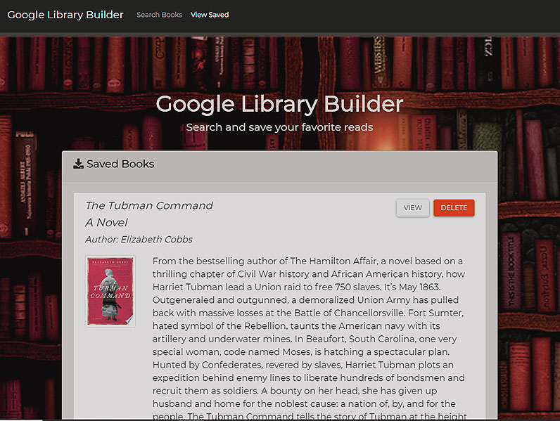
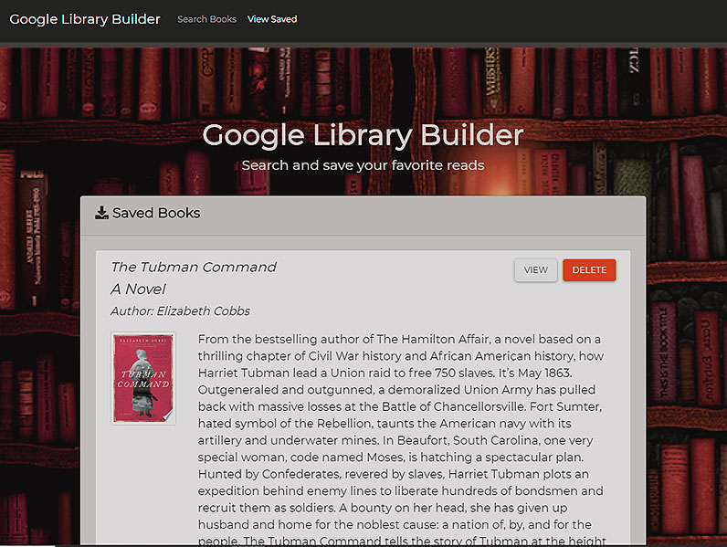
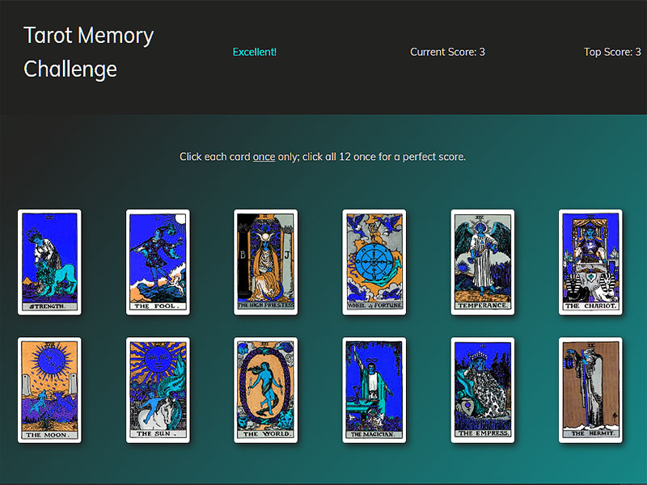

MERN and React Projects
 

Google Library Builder with Full Stack MERN
In learning to use the ReactJS framework, I built a search application that makes an AJAX call to Google Books (https://books.google.com) and retrieves publications by title.
The React framework provided a great introduction into single-page app development with server-side rendering. This makes applications less dependent upon devices to display an application as it's intended.
I especially like the components model within React, which keeps styling and logic closely tethered. This makes for easier debugging and allows developers to reuse components throughout an application with relative ease.
My application was too small for there to be component reuse, but I was able to see how development teams could build libraries of reusable components in React for product lines. I could also see a way to build a chat or guided tour components within this framework.
To use, select the link below; keyword search book titles of interest. In the search results, select Save to bookmark a title or View to access the Google source page. Select View Saved in the navigation bar to access bookmarked titles.
Project: Google Library Builder
Skills / Technologies: MERN (MongoDB + Mongoose/Express/ReactJS/Node), AJAX, and Bootstrap
Link: Google Library Builder (Heroku host)
GIT: View source

Tarot Memory Challenge with ReactJS
For this project, I built an interactive memory game using a ReactJS framework. This was an exercise to familiarize myself with React, which was enlightening! I built my first React components and deployed using Git Pages. I’m intrigued by tarot symbolism, so I used images from an old Rider-Waite deck within the design.
To play, click the game link below. Select each of the twelve cards only once; if you accidentally select a card twice, the score resets to zero. When you reach a score of twelve, you win!
Project: Tarot Memory Challenge
Skills / Technologies: ReactJS, JavaScript, and jQuery with a Bootstrap UI
Link: Google Library Builder
GIT: View source